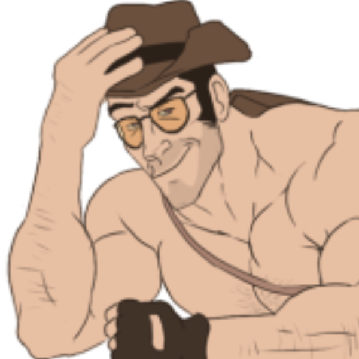

Sniper TF2 :3
"This is gonna be a real piece of piss, you bloody fruit shop owners!"
Your browser does not support the audio element.
About Sniper TF2 :3
New Zealand's top fucking guy who mogs people with heads!!! >:3
lowkey he's the
best
tf2 class ever